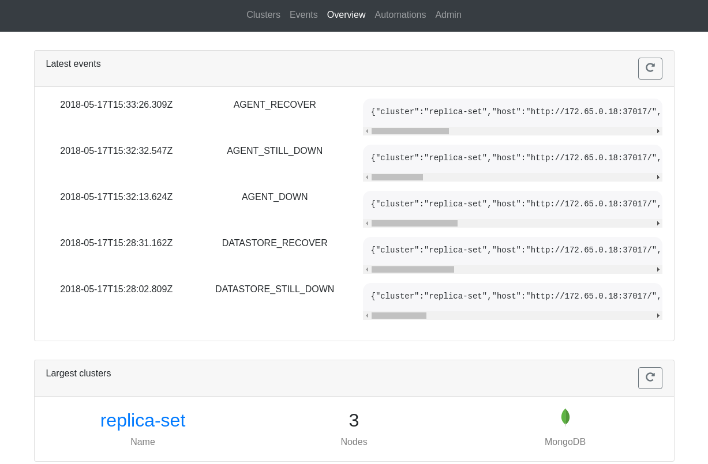

Quick start
This guide will go through the steps needed to setup a local, docker based, playground to test out replicante core and the official agents. By the end you should have a full system running that can be used to experiment with and demo all replicante features and behaviours.
Please note: this guide does not explain how to install and configure replicante for production use and it does not attempt to cover all possible configuration options and installation and management details.
Simplified networking: to keep commands and configurations simple subnets are statically configured with agent containers having static IPs.
1. Getting the code
The playground is a git repo containing a set of docker-compose projects.
Each docker-compose project runs a full cluster and its agents. There is also a docker-compose project to run replicante core with all its dependencies.
Details about each project can be found in the README.md file of the project but generally:
- All projects are self-bootstrapping: just
docker-compose upand a configuration script will run too. - Each project has an additional
docker-compose-agents.yamlfile to run the agents too. - After images are pulled/built there is no more need for internet access.
$ git clone --recoursive https://github.com/replicante-io/playgrounds.git
$ cd playgrounds
2. Running a MongoDB replica set
In this example we will run a MongoDB three node replica set configuration with agents. The same commands can be used to run any number of playgrounds so they will not be repeated.
Start the docker compose project.
The first time, this will pull and build images as needed. Keep in mind that initialisation can take up to a minute.
The optional -d runs the processes in the background if you don't care for the logs.
$ cd mongo/rs
$ docker-compose -f docker-compose.yml -f docker-compose-agents.yml up [-d]
Make sure that the controller process exited with a zero code and all other processes are up.
$ docker-compose -f docker-compose.yml -f docker-compose-agents.yml ps
Name Command State Ports
------------------------------------------------------------------------------------
rs_agent1_1 /replicante/agents/target/ ... Up 0.0.0.0:37018->37017/tcp
rs_agent2_1 /replicante/agents/target/ ... Up 0.0.0.0:37019->37017/tcp
rs_agent3_1 /replicante/agents/target/ ... Up 0.0.0.0:37020->37017/tcp
rs_controller_1 docker-entrypoint.sh bash ... Exit 0
rs_node1_1 docker-entrypoint.sh mongo ... Up 27017/tcp
rs_node2_1 docker-entrypoint.sh mongo ... Up 27017/tcp
rs_node3_1 docker-entrypoint.sh mongo ... Up 27017/tcp
3. Start replicante core and the WebUI
Just like other projects, a initialisation script is run to initialise and configure datastores if needed. It could take a couple of minutes to initialise everything the first time.
The configuration defaults to discovering all nodes for the clusters available in the playground and runs the API and WebUI on port 16016 and 3000 respectively.
$ cd replicantecore/
$ docker-compose up
If you see any errors about missing networks you may need to have other playgrounds create their networks first.
cd path/to/missing/project
$ docker-compose up --no-build --no-start
Once everything is up and running the WebUI will be available at http://localhost:3000/:

4. Experimenting with the playground
Now that all processes are up and running we can interfear with systems and see what happens. Try things like:
- Stop/start datanodes and/or agents.
- Fail over pimaries.
- Use the awesome kernel features and tools to symulate network issues (
tc) and other limits (cgroups).
5. Clean up
Each cluster runs as a signle docker-compose project and stores data in a local ./data directory.
To clean up after you no longer need these processes remove all the docker containers and images
and all data in ./data.
$ docker-compose -f docker-compose.yml -f docker-compose-agents.yml down --rmi all --volumes
$ rm -r ./data